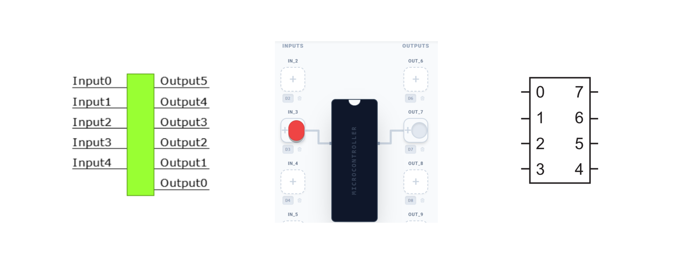
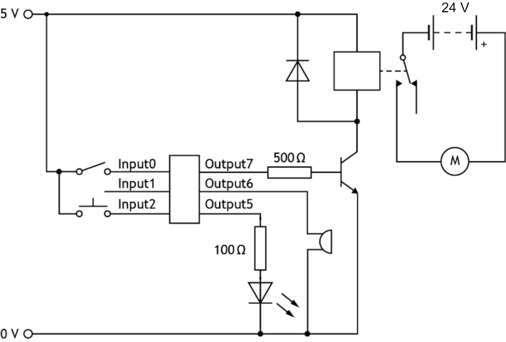
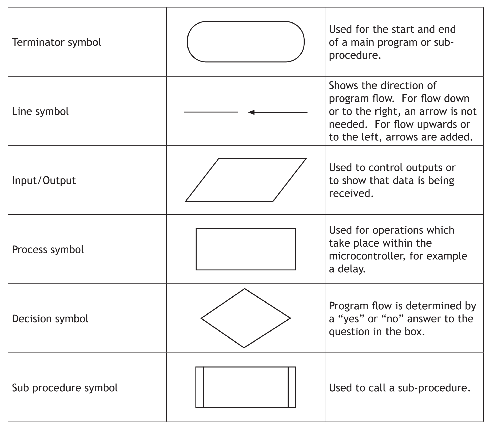
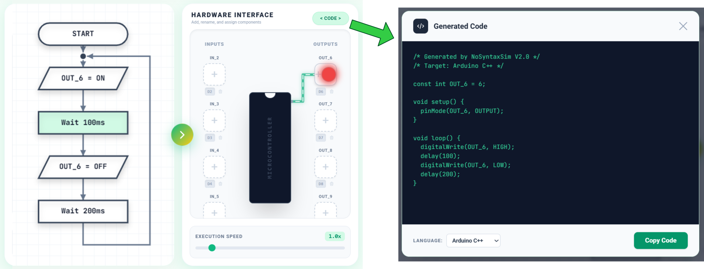

Section 1: Electronic Control Systems
Almost every modern device — from a microwave oven to a car engine — uses an electronic control system. These systems allow devices to respond to the world around them, make decisions, and control outputs automatically.
Any electronic control system can be broken down into three parts:
Devices that combine electronic control with moving mechanisms are called mechatronic systems. A washing machine, robot arm or DVD player are all mechatronic — electronics tells the mechanisms what to do.
Inputs and outputs
- Push switch / toggle switch — detects a press or on/off
- Light-dependent resistor (LDR) — detects light level
- Thermistor — detects temperature
- Microphone — detects sound
- Pressure pad — detects weight or pressure
- Tilt switch — detects orientation
- Infrared sensor — detects IR signals or motion
- LED / lamp — produces light
- Buzzer / speaker — produces sound
- DC motor — produces rotary motion
- Solenoid — produces linear motion
- Relay — switches higher-power circuits
- 7-segment display — displays numbers
- Servo motor — produces controlled angular movement
Section 2: What is a Microcontroller?
A microcontroller is often described as a computer-on-a-chip. It contains a processor, memory and input/output connections all in a single small, inexpensive package. Because of this, microcontrollers can easily be built into everyday products to make them more intelligent.
Unlike a general-purpose computer, a microcontroller is typically programmed to do one specific job. The key advantage is flexibility — the same hardware can be reprogrammed to do something completely different simply by changing the software.

Advantages of microcontrollers
- Reliability — fewer separate components means fewer things to go wrong
- Compact — one chip replaces many separate components, saving space
- Flexible — reprogramming changes what the product does without changing hardware
- Rapid development — changes to the product are made in software, not by redesigning the circuit
- Low cost — mass production makes microcontrollers very inexpensive
Why use a microcontroller instead of fixed logic?
Fixed logic circuits (using logic gates) are hard-wired — to change their behaviour you must physically change the circuit. A microcontroller simply needs a new program. This makes microcontrollers far better for complex control sequences and for products that need to be updated or customised.
Section 3: Inputs, Outputs and Pin Numbers
The microcontroller used in NoSyntaxSim is based on the Arduino platform. Inputs and outputs connect to numbered digital pins (D2–D13). In the SQA exam, you will always be given a pin table telling you which pin connects to which input or output device.
Example pin table
| Pin | Direction | Device |
|---|---|---|
| D2 | INPUT | Push button (start switch) |
| D3 | INPUT | Temperature sensor |
| D4 | INPUT | Pressure pad |
| D5 | INPUT | Reset button |
| D8 | OUTPUT | Red LED |
| D9 | OUTPUT | Green LED |
| D10 | OUTPUT | Motor |
| D11 | OUTPUT | Buzzer |
Digital inputs
A digital input can only be logic 1 (ON) or logic 0 (OFF). A push button is digital — it is either pressed or not. In a decision box in a flowchart, a digital input is checked as: "Is D2 ON?"
Analogue inputs
An analogue input can be any value between a minimum and maximum (e.g. a thermistor produces a varying voltage as temperature changes). To use an analogue signal, the microcontroller must first convert it to a digital number using an Analogue-to-Digital Converter (ADC). In NoSyntaxSim, analogue inputs appear as sliders.
Output drivers
A microcontroller pin can only supply a small current — not enough to directly drive a motor or solenoid. An output driver (typically a transistor or relay) amplifies the signal to power the output device. In exam circuits, a transistor driver circuit is commonly shown between the microcontroller output pin and the output device.

Section 4: Flowcharts
A flowchart is a graphical way of planning and communicating a control sequence. It shows exactly what the microcontroller should do, in what order, and under what conditions. Flowcharts are used in the SQA assignment and exam — you must be able to read, draw, correct and simulate them.
Standard SQA flowchart symbols

| Symbol shape | Name | Used for | Examples |
|---|---|---|---|
| Rounded rectangle (pill) | Terminal | START and STOP of the program | START, STOP |
| Parallelogram | Input / Output | Reading from an input pin or writing to an output pin | Turn D8 ON, Turn D10 OFF, Read D2 |
| Rectangle | Process | Time delays, calculations, variable operations | Wait 500ms, count = count + 1 |
| Diamond | Decision | Checking a condition — has YES and NO exits | Is D2 ON? Is count > 5? |
| Flow arrows | Flow lines | Showing the direction the program follows | Arrows connecting all symbols |
The fixed loop
Most microcontroller programs run continuously — they repeat the same sequence over and over. This is called a fixed loop. The last step in the flowchart connects back to an earlier point (usually the START or the first decision box), so the sequence repeats indefinitely.

Delay units
A delay is used in a Process box to make the program wait for a set time before continuing. In the SQA exam, you must include the delay unit — simply writing "500" is not acceptable. Always write: Wait 500 ms or Delay 2 s.
Section 5: Drawing Flowcharts from a Specification
In the SQA exam and assignment you will be given a written specification and asked to draw a flowchart. Read the specification carefully — each step becomes one or more boxes in the flowchart.
Method
- Read the full specification first
- Identify all inputs and outputs from the pin table
- Draw a START terminal
- Work through the specification step by step — one action per box
- Use Decision boxes for any "wait until…" or "if… then…" conditions
- Use Process boxes for all delays (with units)
- Use In/Out parallelograms to turn outputs ON or OFF
- Add a fixed loop arrow back to the start if the sequence repeats
- Turn LED (D8) ON
- Wait 500 ms
- Turn LED (D8) OFF
- Wait 500 ms
- Repeat continuously

Note the fixed loop arrow returning from the last box to the "Turn D8 ON" step.
- D8 = Red LED | D9 = Amber LED | D10 = Green LED
- Red ON — Wait 10 s
- Red ON, Amber ON — Wait 2 s
- Red OFF, Amber OFF, Green ON — Wait 10 s
- Green OFF, Amber ON — Wait 2 s
- Amber OFF — repeat from step 1

For each task: draw the flowchart in your notes, then build and simulate it in NoSyntaxSim. Use the Export Image button to save your circuit for your portfolio.
- Wait until start button (D2) AND door sensor (D3) are both ON
- Turn light (D8) ON, turntable motor (D9) ON, magnetron (D10) ON
- Wait 10 s
- Turn magnetron (D10) OFF
- Wait 1 s — Turn turntable (D9) OFF
- Turn buzzer (D11) ON — Wait 0.5 s — Turn buzzer (D11) OFF
- Turn light (D8) OFF — STOP
Section 6: Using Inputs — Decision Boxes
Most real control systems respond to sensor inputs. A decision box (diamond) checks whether an input is ON or OFF and branches the flowchart accordingly.

Waiting for an input
To make the program wait until a button is pressed, use a decision box that loops back to itself on the NO branch:
This is called a polling loop — the microcontroller keeps checking the input until it becomes active.
AND control — both inputs must be active
When two conditions must both be true before continuing, two decision boxes are placed in series. The YES output of the first leads into the second decision. Only when both return YES does the program continue.

OR control — either input can be active
When either of two conditions being true is enough to continue, two decision boxes are placed in parallel. The YES output of either one leads to the same next step.

- Wait until pressure pad (D2) is ON
- Turn motor (D8) ON — door opens
- Wait until door limit switch (D3) is ON — door fully open
- Turn motor (D8) OFF
- Wait 3 s
- Close door — turn motor (D9) ON (reverse direction)
- Wait until close limit switch (D4) is ON
- Turn motor (D9) OFF — STOP (or loop)

Many control systems need to drive a motor in two directions — for example a conveyor belt that moves forwards then reverses. In NoSyntaxSim, two separate output pins control direction: one pin drives the motor forwards, the other drives it backwards. Only one should ever be ON at the same time.
- D2 = Forward button | D3 = Reverse button | D8 = Motor forwards | D9 = Motor backwards
- Wait until forward button (D2) OR reverse button (D3) is pressed
- If D2 is pressed → turn D8 ON (motor forwards) — Wait 2 s — turn D8 OFF
- If D3 is pressed → turn D9 ON (motor backwards) — Wait 2 s — turn D9 OFF
- Repeat (fixed loop)

Section 7: Finite (Counted) Loops
A finite loop (also called a counted loop or for loop) repeats a sequence a fixed number of times before stopping. This is different from a fixed loop, which repeats indefinitely.
To create a for…next loop in a flowchart, a variable (e.g. count) is used to keep track of how many times the loop has run:
- Initialise the variable: count = 0
- Perform the repeated action (e.g. flash an LED)
- Increment the variable: count = count + 1
- Decide: is count < target number? YES → repeat. NO → exit loop.

- Wait until button (D2) is pressed
- Sound buzzer (D8) 5 times — each buzz lasts 0.5 s with 0.5 s gap
- Reset and wait for the button again

Section 8: Reading and Correcting Flowcharts
In the SQA exam you will often be given a flowchart that contains errors and asked to identify and correct them. Common errors include:
- Missing delay units (writing "500" instead of "500 ms")
- Wrong pin number used in an input or output box
- Decision box branching the wrong way (YES and NO swapped)
- Missing connection — the loop does not return to the correct point
- Wrong order of steps (e.g. turning a device ON after the delay instead of before)
- No START or STOP terminal
- Wrong flowchart symbol used (e.g. a rectangle instead of a diamond for a decision)
The flowchart below is supposed to flash a lamp (D8) when a moisture sensor (D2) is detected. Find two errors.

Section 9: Generating Arduino Code
One of the most powerful features of NoSyntaxSim is that it can automatically convert your flowchart into real Arduino C++ code. This is the actual code that would run on a physical microcontroller.
While you do not need to write or memorise code for the N5 exam, understanding the connection between a flowchart and the code it produces helps to show how real engineering systems work.

Section 10: Design Challenges
For each challenge below, follow the full engineering process: read the specification carefully, draw a flowchart in your notes, then build and simulate it in NoSyntaxSim. Use the Export Image button to save your work.
This challenge combines decision boxes, a counted variable and two inputs — exactly the kind of multi-part problem that appears in the N5 exam.
- D2 = Entry sensor (ON when person enters) | D3 = Exit sensor (ON when person leaves)
- D8 = Display / counter output | D9 = Alarm (sounds when museum is full)
- Set count = 0
- Check entry sensor (D2) — if ON, add 1 to count
- Check exit sensor (D3) — if ON, subtract 1 from count
- If count > 50 (museum full), turn alarm (D9) ON, otherwise turn alarm OFF
- Output count value to display (D8)
- Repeat continuously
This challenge combines a for…next counted loop with multiple inputs and a sequenced output — a common exam question format.
- D2 = 10p coin sensor | D3 = 20p coin sensor | D4 = Dispense button
- D8 = Can dispenser motor | D9 = Change/reject indicator light
- Set total = 0
- Wait for a coin — if D2 pressed (10p) add 10 to total; if D3 pressed (20p) add 20 to total
- Repeat step 2 until dispense button (D4) is pressed
- If total ≥ 30p: turn D8 ON (dispense can) — Wait 1 s — turn D8 OFF
- If total ≠ 30p exactly: flash D9 (change light) 3 times — each flash 0.5 s ON, 0.5 s OFF
- Reset total to 0 and repeat
- A master switch (D2) must be pressed to arm the system
- If a heat sensor (D3) is activated OR a manual alarm button (D4) is pressed, the alarm (D8) sounds
- The alarm continues to sound until a reset switch (D5) is pressed
- After reset, the system returns to waiting (armed state)
- D2 = Start button | D8 = Red LED | D9 = Amber LED | D10 = Green LED | D11 = Buzzer
- Wait until start button (D2) is pressed
- Red LED (D8) ON — Wait 3 s
- Red (D8) OFF, Amber (D9) ON — Wait 1 s
- Amber (D9) OFF, Green (D10) ON, Buzzer (D11) ON — Wait 0.5 s
- Buzzer (D11) OFF — Green LED stays ON
- System waits for the next race (fixed loop back to wait for button)